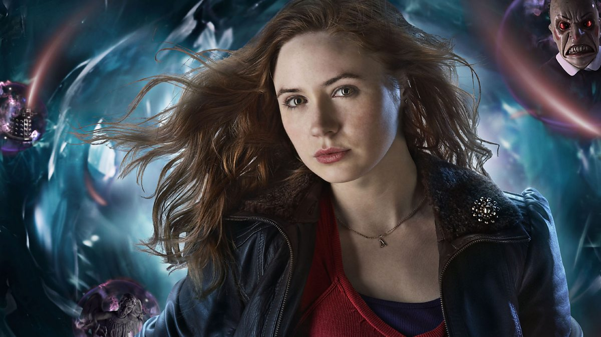
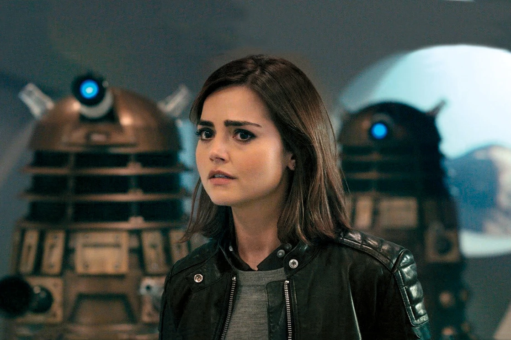
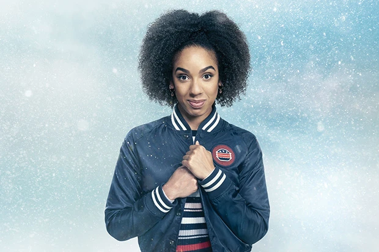
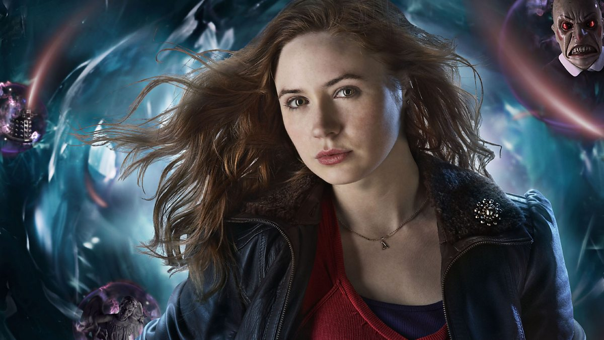
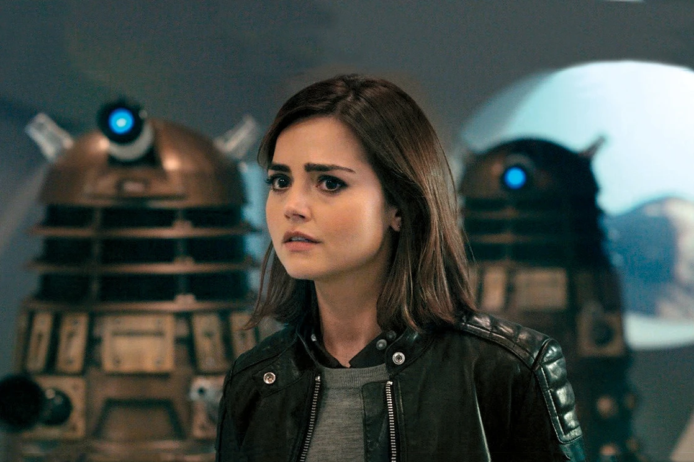
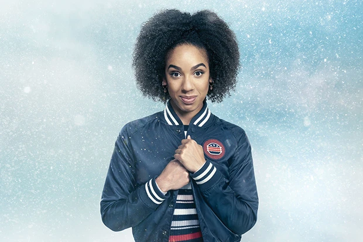

.jpg)
.jpg) 





Rose Tyler
Rose travels with the Ninth Doctor on multiple adventures until a battle with the Daleks saw her absorb the power of the Time Vortex and emerge with her "Bad Wolf" persona until the Doctor saves her life by absorbing the fatal level of energy flowing through her.
The subsequent regeneration of the Ninth Doctor into the Tenth Doctor (David Tennant) only brings the pair closer together and they form a romantic connection.
In the 2006 episode Doomsday, Rose is separated from the Doctor when she is trapped in a parallel universe, leading to a tragic goodbye.
Martha Jones
The 2007 episode Smith and Jones saw the Doctor meet another doctor, human doctor Martha Jones. After helping return a hospital to Earth, Martha joined the Doctor on his travels and went on to save her family, the Doctor, and the world herself from the Master.
At the conclusion of the 2007 season, Martha's unrequited love for the Doctor became too painful as she felt she could never compare in his mind to Rose. Martha chose to return to her life on Earth.
Donna Noble
Introduced in the final scene of the 2006 episode Doomsday, the loud-mouthed temp worker Donna Noble became the companion of the Tenth Doctor in the Christmas special later that year as she was the titular 'Runaway Bride.'
At the end of this festive adventure, Donna declined to join the Doctor in the TARDIS as he still grieved the loss of Rose.
However, Donna later regretted this decision and sought out the Doctor, being reunited with him in the 2008 series which saw her become his companion full-time and also his best friend.
Donna finally found some self-esteem and self-value in her travels with the Doctor but soon became the key to saving the universe when she saved it by bringing about a Time Lord-human "meta-crisis" when she bonded with the Doctor's regenerating hand.
Despite saving all universes, Donna's brain could not handle Time Lord information and the only way the Doctor could prevent her brain "burning up" was to wipe her mind of memories of their travels and she departed the show in the 2008 series' finale, Journey's End.
Amy Pond
Introduced in the 2010 episode The Eleventh Hour, Amelia Pond is a young orphan who was the first person that the Eleventh Doctor (Matt Smith) met and promised to travel with. Amelia waited when he left but he never returned - at least not until she was a feisty grown woman.
Amy then went on to travel with the Doctor and later was accompanied by her boyfriend-turned-husband Rory Williams. They later discovered that Amy had a child named Melody Pond who eventually turned out to be the time-traveller River Song.
Amy and Rory later left the Doctor on multiple occasions but parted ways with him for the final time in the 2012 episode The Angels Take Manhattan when Rory was transported into the past by a Weeping Angel and Amy emotionally elects to join him, knowing they are forced to stay in that fixed time period. The pair live out their days together in the past.
Clara Oswald
Clara appeared in several episodes as different characters whom the doctor could not save, but before death, all Clara's variations spoke the same words.
As it turned out later Clara sacrifices herself to save the Doctor by entering the Doctor's timestream, causing multiple iterations of Clara to appear throughout the Doctor's life and saving him on numerous occasions. The Doctor later saves her and restores her to life.
Clara develops a romantic chemistry with the Doctor and is with him when he regenerates into the Twelfth Doctor (Peter Capaldi), whom she is initially suspicious of. Despite this, and numerous difficulties in their relationship due to moral quandaries and the death of her boyfriend Danny Pink, Clara remains by the Doctor's side until her death in the 2015 episode Face the Raven.
However, the 2015 season finale Hell Bent sees the Doctor use Gallifreyan technology to extract Clara from her last moments of life and help her cheat death.
However, the immortal being Ashildr (Maisie Williams) helps the Doctor realise that together he and Clara are the dangerous prophesied entity 'The Hybrid' and their partnership brings more harm than good. When the Doctor tries to wipe Clara's mind of memories of him, she reverses this to wipe his mind of her instead.
Afterwards, Clara resigns herself to returning to Gallifrey to face her death but intends to go on numerous adventures travelling time and space in a stolen TARDIS with Ashildr by her side.
Bill Potts
Orphaned student Bill Potts is introduced in the 2017 season premiere The Pilot and swiftly becomes the companion of her university professor, The Twelfth Doctor, after losing her love interest Heather who turns into an alien puddle that can travel through space and time.
Bill joins the Doctor on his travels through time and space throughout the 2017 season until the finale World Enough and Time/The Doctor Falls when she is traumatically converted into a Cyberman.
After the Doctor appears dead, Nardole leaves to rescue human refugees and she is left in her new form, Bill is saved from despair when Heather returns and transforms her into a form like her own and Bill returns the Doctor's body to Earth, leaving to travel space and time with Heather.